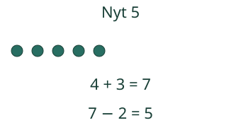
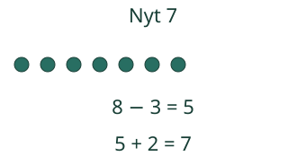

Loikan retkikori: ensin lisää, sitten pois. Seuraa, mistä toinen lasku alkaa.
Miksi välitulos tarvitaan?
Ensin lisää, sitten pois

Myös päinvastainen järjestys

Puuttuva osa yhdistää laskutavat
6 + □ = 10. Voit täydentää kuudesta kymmeneen tai laskea 10 − 6 = 4. Silloin 6 + 4 = 10. Sama osien yhteys näkyy molemmissa laskuissa.
Nolla on tärkeä poikkeus
Merkin arvaaminen vain sillä perusteella, kasvoiko määrä, ei aina riitä. Laskussa4 □0 = 4 sekä + että − käyvät: 4 + 0 = 4 ja4 − 0 = 4. Nolla ei muuta määrää.
Mieti: onko 7 väärä luku?
Katso perustelu
Se on oikea välitulos. Pelkkä 7 ei vastaa kysymykseen, montako on lopuksi, koska toinen tapahtuma on vielä tekemättä.
Kokeile itse
Voit käyttää mallia tai vastata suoraan.
Lisää tutkittavaa
Kokeile mallissa 4 + 3 − 3. Palaatko alkuun? Kokeile sitten 4 − 3 + 3. Molemmat palaavat neljään. Entä voiko samoilla muutoksilla tulla hetkeksi yli 10 tai alle 0? Tämän mallin alue on 0–10, joten sellainen ketju pyydetään muuttamaan.
Lopuksi: laatikossa on 5 merkkiä. Lisää 2 ja ota sitten 4 pois. Mikä on välitulos ja mikä lopputulos? Voit näyttää ne myös irtomerkeillä.
Opettajalle ja ilman ruutua
Merkkien ja lukujen valinta näyttää vain nämä vastaukset. Se ei todista muistamista, sujuvuutta tai koko integraatiotaidon hallintaa. Malli ja vihjeet ovat apua.
Luokat 1–2, integraationoodi. Vaadittu AND: M-ADD-FACT-10 ja M-SUB-FACT-10. Molemmat atomiset taidot ja erillinen soveltamisnäyttö kuuluvat kokonaisuuteen; tämä oppitunti ei myönnä niiden hallintaa. Operaatiot ja määrät annetaan tarinassa. Merkkivalinta ja kaksi numerovastausta ovat rajattu paikallinen havainto, eivät vapaan laskulauseen rakentamisen tai riippumattoman ratkaisustrategian todiste.
Tee pöydällä kaksi peräkkäistä muutosta. Anna lapsen näyttää välissä oleva määrä ennen seuraavaa muutosta tai kirjoittaa molemmat suoraan. Ääneen nimeämistä tai tiettyä klikkaustapaa ei vaadita. Käytä myöhemmin uusia tarinoita ja eri laskujärjestyksiä.132 sekalaskua kattavat 0–10 plus- ja miinusparit; oikeat yksittäiset vastaukset eivät osoita koko faktajoukon säilyvää sujuvuutta. Ei aikarajaa, henkilöhistoriaa tai muodollista arviointipäätöstä.